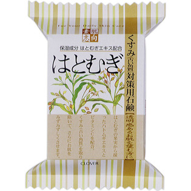
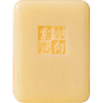

返回列表
产品名称：素肌志向 はと麦 CSN-25HA

クロバーコーポレーション 素肌志向 はと麦 CSN-25HA １２０Ｇ
メーカー クロバーコーポレーション
JANコード 4901498115824
商品の特徴
保湿成分:はとむぎエキス等配合の素肌に優しい石けんです。
成分・分量
石ケン素地、ヨクイニンエキス、アスコルビン酸、ラウロイルグルタミン酸Na、グリチルリチン酸2K、水、PEG-75、BG、エチドロン酸、香料、EDTA-4Na、
酸化鉄、黄406、緑201
用法及び用量
毎日のスキンケアにご使用下さい。